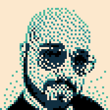
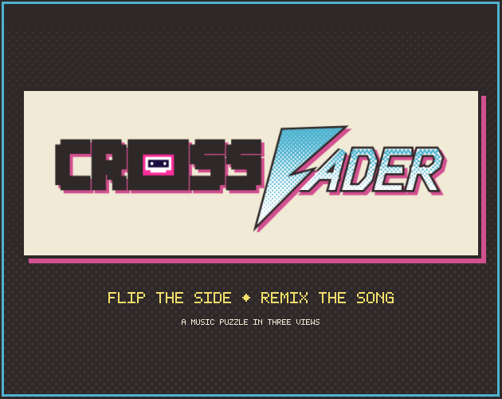
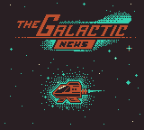
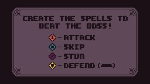
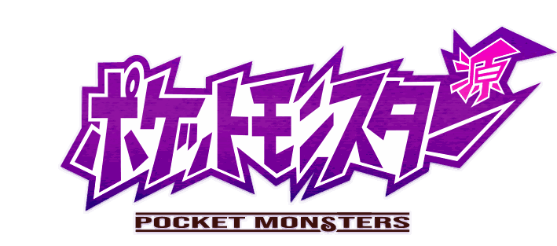
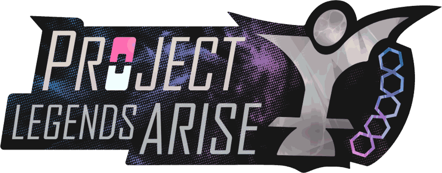
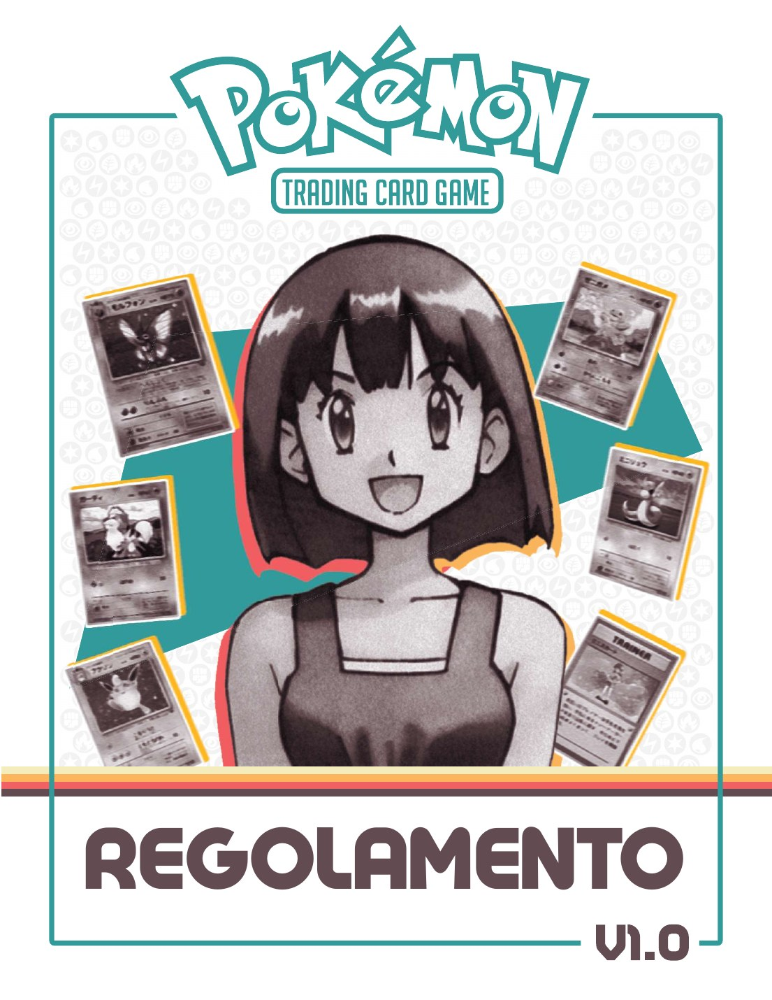
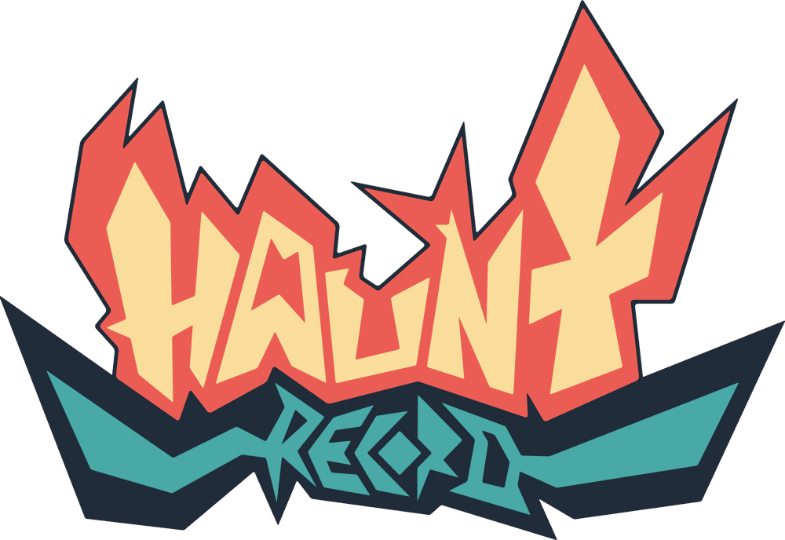

OMAR GOLINELLI

A LETTER
Hi, I’m Omar.
I design board games and video games, and I care most about the metaphor a game is built on: the object you hold, the medium it arrives in, the story it tells by how it plays.
I grew up on the Game Boy and the GBA, and Japanese games still shape most of what I make. Everything on the desk below is something I made. The first four open into a case study.
GAME DESIGN · BOARD GAMES · RPGS · UI/UX · PIXEL ART · STRATEGY
ON THE DESK
- PC DISC
Holon
ホロンA simulator for the RS-PK retro format of the Pokémon TCG (the EX era), designed for digital. Closed alpha, version 0.1.2.
MY PART Game design, visual design, art direction and development, building the code with AI help
- CASSETTE

Crossfader
クロスフェーダーCastle Game Jam, October 2026, 48 hours
A game jam game about cassettes: a puzzle platformer in three views. Flip the side, remix the song.
MY PART Project coordinator, game designer and UI/UX designer: all the UI, the level design, and an art direction that stays cohesive
- GAME BOY CARTRIDGE

Galactic News
ギャラクティック・ニュースGBJAM 11, September 2023
A GBJAM 11 entry for the Game Boy, made in Godot: four colours, 160 × 144 pixels.
MY PART Game design, pixel art and UI art
- PC DISC

SpaceRim
スペースリムCastle Game Jam, October 2023, 48 hours
A rhythm game with RPG boss battles, played by typing spells. Made in 48 hours for Castle Game Jam, October 2023.
MY PART Game designer, pixel artist and UI artist: I drew the bosses and wrote their spells
- GAME BOY ADVANCE CARTRIDGE

Project Minamoto
プロジェクト・ミナモトA Pokémon fan game that re-reads Generation 1 on the GBA.
MY PART Designer, artist and developer: made almost entirely solo
- NINTENDO DS GAME CARD

Legends Arise
レジェンズ・アライズA Pokémon Platinum fan game, built on the original DS hardware and set around Veilstone City.
MY PART UI design and game balance
- RULEBOOK

PTCG Cube
キューブA cube format for the Pokémon TCG, with Roguelike and Co-op modes. This is its rulebook.
MY PART Creator and curator
- ARCHIVED DISC

Haunt Record
ホーント・レコードA dungeon crawler where the player is complicit. Graphics with Edoardo Zuliani.
MY PART Game design, programming, UI design and game graphics
Models: “Desktop Computer” by Mark, CC BY 4.0 · “GameBoy DMG-01” by Let's Do 3D, CC BY 4.0 · “Gameboy Advance” by Rafael Freitas, CC BY 4.0 · “Nintendo DS” by solal.sblt, CC BY 4.0 · “GameBoy Cartridge” by Let's Do 3D, CC BY 4.0 · “Gameboy Advance Cartridge” by Vxcl, CC BY 4.0 · “Nintendo Ds cartridge (preset)” by littlengvfx, CC BY 4.0. Jewel cases, CD tray and envelope are drawn in code; all label and screen art, the Crossfader models and the Cube rulebook are Omar’s own work.